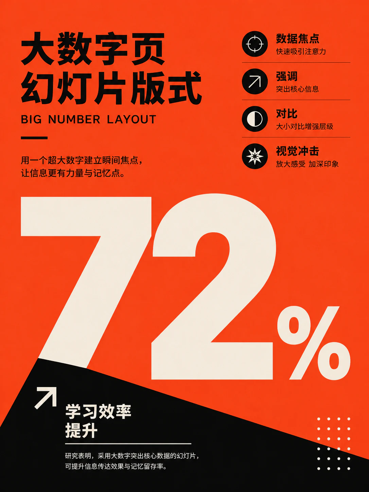

要看趋势、波动或分布
一个平均数或峰值会抹平过程起伏与异常点。展示随时间演变或多组分布时，改用 349 数据图表页幻灯片版式。
用一个超大数字建立瞬间焦点，让信息更有力量与记忆点。
用一个超大数字建立瞬间焦点，让信息更有力量与记忆点。
WHY ONE GIANT FIGURE STICKS · PREATTENTIVE POP-OUT & ISOLATION
原海报把大数字页拆成四步递进：数据焦点（快速吸引注意力）、强调（突出核心信息）、对比（大小对比增强层级）与视觉冲击（放大感受、加深印象）。这四条并不是美学口号，而是直击人类视觉注意的两种底层机制。
第一层是前注意弹出（Anne Treisman, 1985）：人眼在开始逐字阅读之前，会先在整张画面里并行扫描尺寸、明暗与色相的极端差异。当「72%」以十倍字号和明暗反差压倒全页，观众不需要「找」数字，数字会自己跳进视野。
第二层是孤立效应（Hedwig von Restorff, 1933）：把一条信息从同质背景中彻底孤立出来，它的回忆留存率远高于埋在四五条同类项目符号里的数字。与此同时，Mautone 与 Richard E. Mayer（2001）的信号提示研究也表明，明确凸显单一重点能显著降低听众的无关认知负荷——省下来的脑力，刚好用来听你口头讲完背后的故事。
先试试 A 常规段落页，再切到 B 大数字页，亲身感受半秒快门里的捕获差距。
SCALE RATIO & AUDITORIUM DISTANCE · EMPIRICAL THRESHOLDS
很多人做「大数字页」时手软，只把数字放大到正文的 2 到 3 倍。自己在笔记本前 50 厘米看觉得足够醒目，一投到 15 米礼堂幕布上立刻失去压迫感。
主数字字号至少达到说明正文的 5 倍以上，才能建立一眼可辨的「压倒性层级」；但超过 13× 或字符过多时容易顶撞边框，必须给四周留足安全边距。
在 16:9 投影里让主数字视觉高度占到屏高的近三分之一到二分之一，即使在 25 米大会堂后排微糊视野中也能先声夺人。
巨型数字需要整片干净底场托举。如果四周塞满装饰角标、长段落和多余图表，尺度优势会瞬间被噪声吞没。
如果你手里只有一个核心短句而不是定量数字，参考 340 仅标题幻灯片版式；如果要同时展示多组数据走势，请交给 349 数据图表页幻灯片版式。
THE CONTEXT EQUATION · PRECISION, DIRECTION & BASELINE
大数字页最常见的翻车不是「不够大」，而是「光有震撼、没有口径」。没有语境的 72% 只是一枚悬空符号；但把一页小作文塞进屏幕，又会亲手毁掉大数字的瞬间焦点。
教学示意 · 实战要补口径 摘自 344 原海报左下黑区「72% · 学习效率 提升 · 研究表明，采用大数字突出核心数据的幻灯片，可提升信息传达效果与记忆留存率。」
原海报里的「72%」与「研究表明」是用来直观示范视觉尺度的教学占位样本，并没有附带具体实验出处、样本量或对比基准。到了真实商业汇报与学术答辩中，切忌照搬「研究表明」这类泛泛表述——只需在指标名下加一行不超过 24 字的对照基线与统计周期，既不破坏留白，又能挡住现场追问。
72.48% 化成 72%，把 1,842,913 化成 184万。小数点后两位留给会后报表，大屏只给 2–4 个字符的瞬间记忆钩子。↗ 学习效率 提升 这样的 4–8 字短语交代「谁在变、往哪变」。听众心声：……
HISTORICAL LINEAGE · PSYCHOLOGY TO MODERN KEYNOTE
把一个数字放成整页主角，并非某家科技公司拍脑袋发明的噱头，而是视觉心理学、多媒体学习理论与现代演示设计跨越八十余年汇合的结果。
WHEN NOT TO USE · TUFTE’S WARNING & SIBLING LAYOUTS
统计学家与信息设计学者 Edward R. Tufte 在 2003 年的专论《The Cognitive Style of PowerPoint》中尖锐警告：幻灯片的空间分辨率极低，强行把复杂证据压缩成大字口号，极易遮蔽关键细节与决策风险。大数字页只适合做演讲节奏里的「重音钩子」，遇到下面四类场景请立刻换版式：
一个平均数或峰值会抹平过程起伏与异常点。展示随时间演变或多组分布时，改用 349 数据图表页幻灯片版式。
当结论取决于两个以上维度的交叉取舍（例如成本 vs 风险），孤立单数讲不清利弊，改用 348 矩阵页幻灯片版式。
跳出过程只扔结果容易显得武断。交代阶段节点请用 346 时间线页幻灯片版式，拆解环环相扣的机制请用 347 流程页幻灯片版式。
没有硬核定量证据时别硬凑数字；核心断言适合 345 引语页幻灯片版式，现场沉浸氛围适合 350 全图页幻灯片版式。严肃工程或财务评审另附纸面备忘录（Tufte, 2003）。
SINGLE-VARIABLE CHECK · PICK THE MOST EFFECTIVE SLIDE
情境：季度复盘会上，你要用一页幻灯片向管理层强调「新版引导上线 30 天后，新用户次日留存从旧版 31% 升到 54%（样本 1.8 万）」。下方四张稿配色、字体与斜切骨架完全相同，彼此只差一个关键变量——哪一页最能在现场一秒锁焦且经得起追问？
ORIGINAL POSTER · 344 BIG NUMBER LAYOUT

用一个超大数字建立瞬间焦点，让信息更有力量与记忆点。